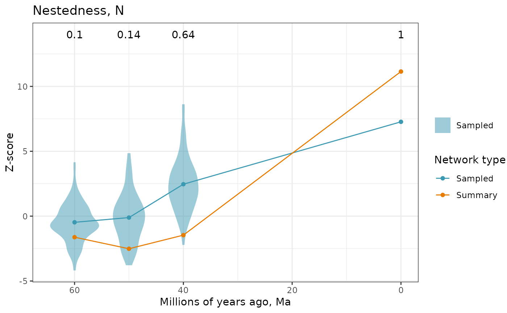

Plot network structure indices across ancestral summary, sampled and extant networks
Source:R/index_at_ages.R
plot_index_at_ages.RdPlot z-scores for nestedness (NODF) and/or modularity (Q) for sampled and summary networks at time points in
the past, calculated by index_at_ages_samples and index_at_ages_summary.
Usage
plot_index_at_ages(
nodf_sampled,
q_sampled = NULL,
nodf_summary = NULL,
q_summary = NULL,
col_sampled = "#3B9AB2",
col_summary = "#E67D00"
)Arguments
- nodf_sampled
Output of
index_at_ages_sampleswhen index = "NODF".- q_sampled
Output of
index_at_ages_sampleswhen index = "Q".- nodf_summary
Output of
index_at_ages_summarywhen index = "NODF".- q_summary
Output of
index_at_ages_summarywhen index = "Q".- col_sampled
Color used to represent values from sampled networks.
- col_summary
Color used to represent values from summary networks.
Value
A plot of z-scores over time. Violins show the posterior distribution of z-scores of sampled networks, with dots and lines showing the mean values. Z-scores of summary networks and extant network are shown as dots and line. Use different colors to differentiate values from sampled and summary networks.
Examples
# read data that comes with the package
data_path <- system.file("extdata", package = "evolnets")
tree <- read_tree_from_revbayes(paste0(data_path,"/tree_pieridae.tre"))
host_tree <- ape::read.tree(paste0(data_path,"/host_tree_pieridae.phy"))
history <- read_history(paste0(data_path,"/history_thin_pieridae.txt"), burnin = 0)
# calculate posterior probabilities at ages
ages <- c(60, 50, 40, 0)
at_ages <- posterior_at_ages(history, ages, tree, host_tree)
# summary networks
summary_networks <- get_summary_networks(at_ages, threshold = 0.5, weighted = TRUE)
Nz_sum <- index_at_ages_summary(summary_networks, index = "NODF", nnull = 10)
# sampled networks
sampled_networks <- get_sampled_networks(at_ages)
Nz_sam <- index_at_ages_samples(sampled_networks, index = "NODF", nnull = 10)
# plot
plot_index_at_ages(nodf_sampled = Nz_sam, nodf_summary = Nz_sum)
#> Warning: Groups with fewer than two data points have been dropped.
